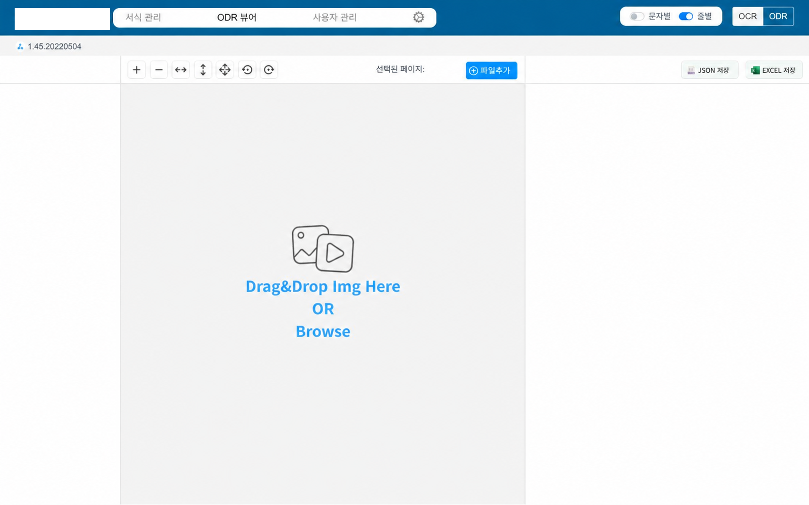
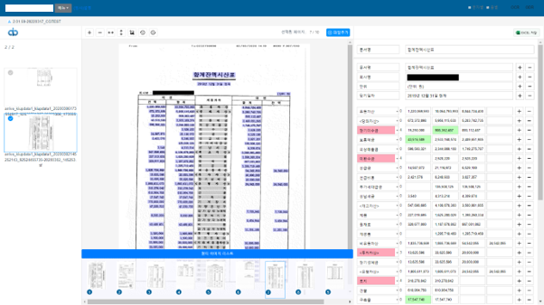

OCR 뷰어 웹 전환 및
인식 결과 검수·편집 화면 개발
C# 데스크톱 프로그램으로만 쓸 수 있던 OCR 뷰어를 브라우저에서 쓸 수 있도록 Vue.js로 옮긴 프로젝트입니다. 화면을 이미지 목록 · 문서 뷰어 · 결과 편집 세 영역으로 나누고, 이미지 위의 인식 영역과 오른쪽 결과값을 서로 클릭해 바로 찾아갈 수 있게 만들었습니다. 브라우저에서 OCR 서버로 직접 요청할 수 없는 문제(CORS)는 Spring Boot 중계 서버를 만들어 해결했고, 운영 환경 요구에 맞춰 IE11에서도 같은 기능이 동작하도록 대응했습니다.
기간
2021.12 ~ 2022.03
약 4개월인원
2명
본인(웹 전체) + C# 뷰어 개발자 1명담당
웹 화면 + 중계 서버
Vue.js 화면 개발, Spring Boot 중계 서버, 빌드·배포 설정배포
WAS 배포 (WAR)
프론트 빌드 결과를 백엔드와 함께 배포실제 화면
실제로 개발한 웹 뷰어 화면입니다. 이미지를 누르면 크게 볼 수 있습니다.

가운데 영역에 파일을 끌어다 놓거나 파일추가 버튼으로 이미지·PDF·TIFF를 올립니다. 툴바에서는 확대·축소, 폭 맞춤, 높이 맞춤, 원본 비율 맞춤, 좌·우 90° 회전을 할 수 있고, 상단에서 OCR/ODR 모드와 인식 영역 표시 단위(문자별·줄별)를 바꿀 수 있습니다.

왼쪽은 올린 파일 목록, 가운데는 문서와 아래쪽 페이지 썸네일, 오른쪽은 서식 항목별 인식 결과입니다. 결과 칸의 배경색은 인식률 등급을 나타내며, 값을 바로 고칠 수 있습니다.
화면에서 볼 수 있는 기능
- ① 파일 목록: 올린 파일을 썸네일로 보여주고, 여러 페이지 문서는 페이지 썸네일을 따로 보여줍니다.
- ② 문서 뷰어: 확대·축소, 폭/높이 맞춤, 90° 회전을 지원하고 인식 영역을 이미지 위에 그립니다.
- ③ 인식률 색상: 결과값마다 인식률 등급(A~E)에 따라 배경색을 다르게 칠해 확인이 필요한 값을 바로 알 수 있습니다.
- ④ 결과 저장: 검수한 결과를 Excel 또는 JSON 파일로 내려받습니다.
화면 구성과 핵심 사용 흐름
데스크톱 뷰어의 사용 방식을 유지하면서, 웹에서 쓰기 편하도록 세 영역으로 나눈 화면입니다.
3단 화면 구성
영역 사이 경계를 마우스로 끌어 폭을 조절할 수 있습니다(vue-resizable). 처음에는 15 : 50 : 35 비율로 시작하고, 브라우저 창 크기가 바뀌면 비율을 유지한 채 다시 계산합니다.
① 이미지 목록
약 15%- 올린 파일 썸네일
- PDF·TIFF 페이지별 썸네일
- ↑↓ 파일 이동, ←→ 페이지 이동
- 삭제 전 확인 창
② 문서 뷰어
약 50%- Canvas에 이미지와 인식 영역(다각형) 표시
- 확대·축소(+ - 키 지원), 드래그 이동
- 폭 / 높이 / 원본 비율 맞춤
- 90° 단위 회전 — 인식 영역도 함께 회전
- 인식 영역 클릭 → 오른쪽 결과값으로 이동
③ 결과 확인·편집
약 35%- 인식률 A~E 등급별 색상
- 결과값 클릭 → 해당 영역 확대 미리보기
- 후보값 선택 또는 직접 입력
- Tab 키로 E등급 값만 차례로 이동
- Excel · JSON 저장
맡은 일 — 프론트엔드 (Vue.js)
데스크톱 뷰어의 기능을 웹으로 옮기고, 결과 검수를 빠르게 할 수 있도록 만든 기능들입니다.
파일 불러오기 & 문서 표시
- 썸네일 이미지 썸네일 목록: JPG·PNG·BMP·GIF는 blueimp-load-image로 캔버스로 읽어 왼쪽 목록에 썸네일로 보여줍니다. 드래그 앤 드롭과 파일 선택 둘 다 지원합니다.
- PDF · TIFF 여러 페이지 문서 표시: PDF는 PDF.js로, TIFF는 tiff.js로 페이지마다 이미지로 바꿔 페이지 썸네일을 만들고, 각 페이지를 OCR 서버에 요청합니다.
-
TIFF 비율 TIFF 가로·세로 비율 보정:
가로와 세로 해상도(DPI)가 다른 TIFF는 그대로 그리면 찌그러져 보였습니다. ExifReader로
XResolution·YResolution값을 읽어 그 비율만큼 캔버스 크기를 늘려 원래 모양대로 보이게 했습니다. -
영역 표시 인식 영역 그리기:
OCR 서버가 돌려준 꼭짓점 좌표로 Canvas(
Path2D)에 다각형을 그립니다. 문자 단위·줄 단위 표시를 스위치로 바꿀 수 있고, 선택한 값은 다음 접속 때도 유지되도록 localStorage에 저장합니다. - 회전 이미지와 인식 영역 함께 회전: 이미지는 캔버스에서 90° 단위로 돌리고, 인식 영역 좌표도 같은 각도의 공식으로 다시 계산해 회전 후에도 위치가 어긋나지 않게 했습니다. (문제 해결 ②)
- 확대·이동 확대·축소·이동: panzoom 라이브러리로 드래그 이동과 확대·축소를 붙이고, + - 단축키와 폭/높이/원본 비율 맞춤 버튼을 만들었습니다.
결과 확인·편집
- 양방향 선택 이미지 ↔ 결과값 서로 찾아가기: 이미지를 클릭하면 클릭한 점이 어느 다각형 안에 있는지 판별해(점에서 선을 그어 경계와 몇 번 만나는지 세는 Ray casting 방식) 해당 결과값으로 이동합니다. 반대로 결과값을 클릭하면 이미지의 해당 영역을 강조합니다.
- 확대 미리보기 선택한 영역만 잘라 보여주기: 결과값을 클릭하면 원본에서 그 영역만 잘라낸 이미지를 입력칸 바로 위에 띄웁니다. 마우스로 끌어 옮길 수 있고, 휠로 0.2~5배까지 확대할 수 있으며, 높이 40px 미만의 작은 글자는 처음부터 2배로 보여줍니다.
- 인식률 등급 등급별 색상 표시: 인식 점수 0.9 / 0.8 / 0.7 / 0.6 기준으로 A~E 등급을 나눠 색을 칠하고, 색상은 옵션 창에서 바꿀 수 있게 했습니다. 사용자가 고친 값은 '수정됨' 색으로 따로 표시합니다.
-
Tab 이동 확인이 필요한 값만 Tab으로 이동:
인식률이 가장 낮은 E등급 값만 Tab 키로 이동되도록
tabindex를 조정해, 검수자가 의심스러운 값만 차례로 확인할 수 있게 했습니다. - 값 편집 후보값 선택 + 직접 입력: 셀렉트박스와 입력칸을 겹쳐 OCR이 제시한 후보값 중 고르거나 직접 입력할 수 있게 했습니다. 표 형태 결과는 열 단위로 좌·우로 옮기는 기능(모달 창)도 만들었습니다.
- 결과 저장 Excel · JSON 내보내기: SheetJS로 Excel 파일을 만듭니다. OCR 모드는 처리 시간·파일명·줄별 텍스트를, ODR 모드는 서식(문서)마다 별도의 Excel 파일을 만듭니다. JSON은 FileSaver로 저장합니다.
설정 화면 · 공통 처리 · 브라우저 호환
-
설정 화면 OCR 서버 관리 화면:
OCR 서버 목록 추가·삭제·초기화, 파일에서 목록 가져오기, 사용할 서버 선택, Agent 업데이트 파일 업로드 기능을 만들었습니다. 설정값은 백엔드 API(
/get-config,/save-config)로 저장하고 불러옵니다. - 동시 요청 제한 한 번에 보내는 요청 수 제한: 여러 페이지 문서를 올려도 OCR 서버에 요청이 한꺼번에 몰리지 않도록 axios 인터셉터에서 동시에 처리 중인 요청 수를 제한했습니다. 한도는 설정 화면에서 1~12 단계로 조절합니다. (문제 해결 ③)
- 화면 설정 저장 사용자 선택 유지: OCR/ODR 모드, 문자별·줄별 표시 선택을 localStorage에 저장해 새로고침 후에도 그대로 유지됩니다.
- IE11 지원 IE11 호환: 위 기능들이 IE11에서도 동작하도록 Babel(core-js 3) 빌드 설정, 폴리필(Path2D, IntersectionObserver, CSS 변수 등), PDF.js ES5 빌드를 적용했습니다. (문제 해결 ①)
맡은 일 — 백엔드 (Spring Boot)
브라우저가 OCR 서버에 직접 요청하지 못하는 문제(CORS)를 풀기 위해 만든 중계 서버입니다.
Spring Boot 중계 서버 & 배포
- CORS 해결 요청을 대신 전달하는 서버: 브라우저와 OCR 서버(Agent)는 주소가 달라 브라우저 보안 정책(CORS)에 막혔습니다. 그래서 브라우저는 같은 주소의 Spring Boot 서버로 요청하고, 서버가 Agent에 대신 요청해 결과를 돌려주도록 만들었습니다.
-
REST API RestController + WebClient:
프론트에서 보낸 파일(multipart)을 RestController로 받고, WebClient로 설정 화면에서 선택한 Agent 서버에 전달합니다. 프론트에서 쓰는 주요 경로는
/ocr,/odr,/info입니다.
-
설정 저장 DB 없이 CSV 파일로 설정 관리:
서버 목록, 선택한 서버, 동시 요청 수 같은 설정을 CSV 파일로 저장하고 불러오게 했습니다(
/get-config,/save-config,/get-concurrency). -
WAR 배포 WAS 배포용 빌드:
프론트 빌드 결과(
dist/static)를 백엔드에 포함해 WAR로 빌드하고 WAS에 배포할 수 있게 구성했습니다. 개발 중에는.env의 주소로 Vue 개발 서버 프록시를 연결해 사용했습니다.
문제 해결 경험
처음 고른 방법이 통하지 않아 방향을 바꿨던 세 가지 사례입니다. 코드는 실제 저장소에서 가져왔습니다.
① IE11에서 PDF가 열리지 않고 화면이 깨지던 문제
IE11 호환문제
크롬에서는 잘 되던 뷰어가 IE11에서는 동작하지 않았습니다. 처음에는 Babel 설정에 IE11만 추가하면 될 거라 생각했지만,
문법 오류를 없앤 뒤에도 Path2D, IntersectionObserver, CSS 변수처럼 IE11에 아예 없는 기능에서 다시 막혔습니다.
특히 PDF를 읽는 PDF.js는 별도 Worker 파일을 불러오는 방식이라, 최신 버전으로는 IE11에서 PDF가 열리지 않았습니다.
시도한 방법
- 최신 PDF.js(legacy 빌드) + worker-loader/babel-loader: Worker 파일까지 Babel로 변환하도록 webpack 설정을 바꿨지만 크롬에서만 성공했습니다.
- file-loader로 Worker 파일 경로 지정: 빌드 설정 조건에 따라 될 때와 안 될 때가 갈려 안정적이지 않았습니다.
- CDN(cdnjs)의 Worker 주소 지정: 동작은 했지만 외부 서버에 의존하게 되어 채택하지 않았습니다.
해결
문법 변환과 없는 기능 채우기(폴리필)를 나눠서 처리했습니다. PDF.js는 구형 브라우저용 ES5 빌드가 들어 있는 2.5.207 버전으로 고정하고, Worker도 번들에 포함해 외부 파일 없이 동작하게 했습니다.
// src/views/Home.vue — ES5 빌드와 Worker 엔트리를 번들에 포함 (pdfjs-dist 2.5.207) import * as pdfjsLib from "pdfjs-dist/es5/build/pdf"; import PDFJSWorker from "pdfjs-dist/es5/build/pdf.worker.entry"; pdfjsLib.GlobalWorkerOptions.workerSrc = PDFJSWorker; // src/main.js — IE11에 없는 기능 채우기 import 'core-js/stable' import 'regenerator-runtime/runtime' import 'intersection-observer' import 'node-remove-polyfill' import "path2d-polyfill" import 'blueimp-canvas-to-blob' import cssVars from 'css-vars-ponyfill' cssVars() // babel.config.js — 대상 브라우저(browserslist: "ie > 10")에 맞춰 core-js 3 적용 presets: [["@vue/cli-plugin-babel/preset", { useBuiltIns: 'entry', corejs: { version: 3, proposals: true } }]] // vue.config.js — ES6 문법이 남아 있는 라이브러리도 변환 대상에 포함 transpileDependencies: ['exifreader', 'vue-zoomer', 'vue-resizable']
결과 및 배운 점
PDF 열람을 포함한 뷰어 기능이 IE11과 최신 브라우저에서 같은 방식으로 동작하게 되었습니다. Babel 변환은 문법만 바꿔줄 뿐 브라우저에 없는 기능까지 만들어주지는 않는다는 것을 알게 되었고, 이후로는 라이브러리를 고를 때 구형 브라우저용 빌드가 있는지부터 확인하게 되었습니다.
② 이미지를 회전하면 인식 영역이 엉뚱한 곳에 그려지던 문제
좌표 변환문제
OCR 서버가 돌려주는 좌표는 회전하기 전 원본 이미지 기준입니다. 그런데 화면에서는 사용자가 문서를 90°씩 돌려 보기 때문에, 회전한 뒤에도 인식 영역이 같은 글자를 정확히 가리켜야 했습니다.
시도한 방법
- CSS
transform: rotate()로 이미지만 회전: 이미지는 돌아갔지만 인식 영역은 제자리에 남았습니다. CSS는 보이는 모양만 바꿀 뿐 좌표 데이터는 바꾸지 않기 때문입니다. - 회전할 때마다 원본 좌표를 덮어쓰기: 회전을 여러 번 하면 변환이 겹겹이 쌓여 오차가 생겼고, 지금 좌표가 어느 상태 기준인지 알기 어려워 디버깅도 힘들었습니다.
해결
원본 좌표는 절대 바꾸지 않고, 화면을 그릴 때마다 현재 각도에 맞는 좌표를 새로 계산하도록 바꿨습니다. 이미지도 CSS가 아닌 캔버스에서 회전시켜 이미지와 영역이 같은 기준으로 그려지게 했습니다. (W, H = 회전 전 원본 너비·높이)
| 회전 각도 | 원본 좌표 (x, y) → |
|---|---|
| 90° | (y, W − x) |
| 180° | (W − x, H − y) |
| 270° | (H − y, x) |
// src/ocr/rotate.js — 원본 좌표(polys)는 그대로 두고, 회전된 좌표를 새 배열로 만든다 (핵심만 요약) function rotatePoly(polys, angle, width, height) { // 실제 코드는 모든 다각형의 모든 꼭짓점 p를 반복하며 아래 식을 적용한다 switch (angle % 360) { case 90: poly.push({ x: p.y, y: width - p.x }); break; case 180: poly.push({ x: width - p.x, y: height - p.y }); break; case 270: poly.push({ x: height - p.y, y: p.x }); break; default: return polys; // 0°는 원본 그대로 } } // 이미지도 캔버스에서 같은 방향으로 회전 (90°: 가로·세로를 바꾸고 기준점을 옮긴 뒤 회전) function rotate90(canvas, width, height) { canvas.width = height; canvas.height = width; var ctx = canvas.getContext("2d"); ctx.translate(0, width); ctx.rotate(-90 * Math.PI / 180); return ctx; } // src/views/Home.vue makeGlassView() — 확대 미리보기도 회전된 좌표로 회전된 캔버스에서 잘라낸다 let rotatedPoly = OdrRotatePoly(poly, this.rotate_angle, this.img_width, this.img_height); var standardX = getWidth(rotatedPoly); // 영역의 왼쪽·오른쪽 끝 var standardY = getHeight(rotatedPoly); // 영역의 위·아래 끝 cropCanvas.width = standardX.standardMaxX - standardX.standardMinX; cropCanvas.height = standardY.standardMaxY - standardY.standardMinY; ctx.drawImage(this.rotatedCanvas, standardX.standardMinX, standardY.standardMinY, cropCanvas.width, cropCanvas.height, 0, 0, cropCanvas.width, cropCanvas.height);
결과 및 배운 점
몇 번을 회전해도 인식 영역과 확대 미리보기가 같은 글자를 가리키게 되었고, 각도별 계산이 한 함수에 모여 있어 문제가 생겨도 원인을 찾기 쉬워졌습니다. 화면과 데이터가 정확히 맞아야 하는 기능에서는 보이는 모양만 바꾸는 방법(CSS)에 기대면 안 되고, 원본 데이터와 계산 결과를 섞지 말아야 한다는 것을 배웠습니다.
③ 여러 페이지 문서를 올리면 OCR 요청이 한꺼번에 몰리던 문제
요청 수 제어문제
처음에는 페이지마다 OCR 요청을 바로 보냈습니다. 이미지 몇 장으로 테스트할 때는 문제가 없었지만, 수십 페이지짜리 PDF·TIFF를 올리자 페이지 수만큼의 요청이 한꺼번에 OCR 서버로 몰려 응답이 늦어지고 일부는 실패했습니다.
시도한 방법
- 요청을 보내는 곳마다 순서대로 보내도록 처리: 요청을 보내는 곳이 늘어날수록 제어 코드가 여기저기 흩어져 관리하기 어려웠습니다.
해결
제어하는 곳을 axios 인터셉터 한 곳으로 모았습니다. 요청을 보내기 전, 처리 중인 요청 수가 한도보다 적어질 때까지 기다렸다가 보내고, 응답이 오면 성공이든 실패든 숫자를 하나 줄입니다. 한도는 백엔드에서 받아오고(설정 화면에서 1~12 단계로 조절), 백엔드가 응답하지 않으면 기본값 3을 씁니다.
// src/axios/api.js let MAX_REQUESTS_COUNT = 3 const INTERVAL_MS = 100 let PENDING_REQUESTS = 0 const api = axios.create({}) api.interceptors.request.use(function (config) { return new Promise((resolve) => { let interval = setInterval(() => { if (PENDING_REQUESTS < MAX_REQUESTS_COUNT) { // 자리가 날 때까지 대기 PENDING_REQUESTS++ clearInterval(interval) resolve(config) } }, INTERVAL_MS) }) }) api.interceptors.response.use(function (response) { PENDING_REQUESTS = Math.max(0, PENDING_REQUESTS - 1) return Promise.resolve(response) }, function (error) { PENDING_REQUESTS = Math.max(0, PENDING_REQUESTS - 1) // 실패해도 꼭 줄여야 한도가 막히지 않음 return Promise.reject(error) })
결과 및 배운 점
페이지 수와 관계없이 OCR 서버에 들어가는 요청 수가 일정하게 유지되었고, 서버 사양에 맞춰 배포 없이 설정 화면에서 한도를 바꿀 수 있게 되었습니다. 요청 수 제어는 기능 코드가 아니라 통신 계층에서 한 번에 처리해야 한다는 것, 그리고 실패했을 때도 숫자를 되돌리지 않으면 한도가 점점 막혀 뷰어 전체가 멈춘다는 것을 배웠습니다.
기술 스택
버전은 프로젝트 package.json에 적힌 기준입니다.
| 구분 | 기술 | 버전 | 어디에 썼나 |
|---|---|---|---|
| Frontend | Vue.js, Vue Router | 2.6.14 / 3.5.3 | 뷰어·설정·사용자 관리 화면 구성과 페이지 이동 |
| UI | Bootstrap, BootstrapVue, Font Awesome, vue-resizable | 4.6.1 / 2.21.2 / 6.1.1 / 1.3.2 | 모달·폼·아이콘, 3단 영역 폭 조절 |
| 문서 표시 | pdfjs-dist (ES5 빌드), tiff.js, Canvas API | 2.5.207 / 1.0.0 | PDF·TIFF 페이지를 이미지로 변환, 인식 영역 그리기 |
| 이미지 처리 | blueimp-load-image, ExifReader, panzoom | 5.16.0 / 4.2.0 / 9.4.2 | 썸네일 생성, TIFF 해상도 비율 보정, 확대·축소·이동 |
| 통신 | axios (인터셉터) | 0.24.0 | API 호출, 동시 요청 수 제한 |
| 파일 저장 | SheetJS (xlsx), FileSaver | 0.18.0 / 2.0.5 | 결과 Excel · JSON 내보내기 |
| IE11 호환 | core-js, regenerator-runtime, path2d-polyfill, intersection-observer, css-vars-ponyfill | 3.20.2 / 0.13.9 / 1.2.0 / 0.12.0 / 2.4.7 | IE11에 없는 기능 보완 |
| 빌드 | Vue CLI, Babel, ESLint | 4.5 | 빌드(dist/static), IE11 대상 변환 |
| Backend | Spring Boot, RestController, WebClient | — | OCR 서버 요청 중계(CORS 해결), CSV 설정 저장, WAR 배포 |